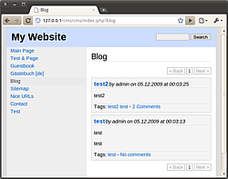
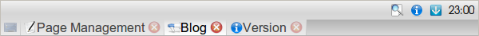
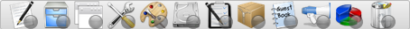
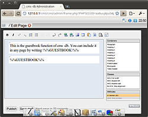

cms -db
Archivierte Anleitung
Dieser Artikel wurde archiviert, da er - oder Teile daraus - nur noch unter einer älteren Ubuntu-Version nutzbar ist. Diese Anleitung wird vom Wiki-Team weder auf Richtigkeit überprüft noch anderweitig gepflegt. Zusätzlich wurde der Artikel für weitere Änderungen gesperrt.
Anmerkung: Das Projekt ist eingestellt, es gibt keine neuen Version oder Bugfixes für bestehenden Versionen mehr, siehe auch Hinweis auf der Homepage  .
.
Dieser Artikel wurde für die folgenden Ubuntu-Versionen getestet:
Dieser Artikel ist größtenteils für alle Ubuntu-Versionen gültig.
Zum Verständnis dieses Artikels sind folgende Seiten hilfreich:
cms -db  ist ein in PHP geschriebenes Content Management System (kurz: CMS), also ein Programm zum Bearbeiten einer Website über einen Webbrowser. Es benötigt, wie der Name schon sagt, keine Datenbank und ist deshalb auch sehr einfach zu installieren. cms -db wird als Open-Source-Software unter der GNU General Public License (GPL) 3 veröffentlicht.
ist ein in PHP geschriebenes Content Management System (kurz: CMS), also ein Programm zum Bearbeiten einer Website über einen Webbrowser. Es benötigt, wie der Name schon sagt, keine Datenbank und ist deshalb auch sehr einfach zu installieren. cms -db wird als Open-Source-Software unter der GNU General Public License (GPL) 3 veröffentlicht.
Installation¶
Da cms -db nicht als Ubuntu-Paket verfügbar ist, muss es von Hand installiert werden.
Webserver installieren¶
cms -db ist eine PHP-basierte Serveranwendung. Deshalb müssen zwingend ein Webserver (z.B. Apache) sowie PHP 5 installiert werden [1], bevor cms -db verwendet werden kann.
Falls als Webserver lighttpd eingesetzt werden soll sollte man die im lighttpd-Artikel vorgeschlagenen PHP-Pakete nutzen
cms -db installieren¶
Vor der Installation muss cms -db von der Website des Projekts heruntergeladen werden.
Jetzt kann cms -db durch Entpacken des Archives nach /var/www auf dem Webserver installiert werden. Um sicherzustellen, dass der Webserver Zugriff auf die Dateien hat, müssen sie außerdem mit den richtigen Rechten versehen werden. Dies alles geschieht in einem Terminal [2] mit den folgenden Befehlen, die aus dem Ordner ausgeführt werden müssen, in dem sich das heruntergeladene Archiv befindet:
sudo mkdir /var/www/cms-db sudo tar -C /var/www/cms-db -xzvf cms-db_*.tar.gz sudo chown www-data:www-data -R /var/www/cms-db
Um ein Update auf eine neuere Version durchzuführen, genügt es, das aktuelle Archiv herunterzuladen und danach erneut die oben angegebenen Befehle auszuführen. Vorher sollte allerdings ein möglicherweise noch vorhandenes älteres Archiv im gleichen Ordner gelöscht werden, da der angegebene Befehl aufgrund der Wildcard sonst nicht funktioniert.

Einrichtung¶
Die Einrichtung von cms -db erfolgt über eine einfache Weboberfläche. Falls die Einrichtung auf dem Computer ausgeführt werden soll, auf dem das CMS auch installiert wurde, kann die Weboberfläche jetzt über die Adresse http://localhost/cms-db/admin/login.php aufgerufen werden. Falls die Einrichtung von einem entfernten Computer erfolgt, muss in der oben genannten Adresse localhost durch die Adresse des Computers, auf dem das CMS installiert wurde, ersetzt werden.
Der Einrichtungs-Assistent besteht aus insgesamt vier selbsterklärenden Schritten. Nach dem vierten Schritt kommt man zur Anmeldeseite, wo man sich mit den gewählten Daten des Hauptbenutzers anmelden kann.
Bedienung¶
cms -db aufrufen¶
cms -db kann nach der Installation über die folgenden Adressen aufgerufen werden:
"Website:"
http://localhost/cms-db/"Adminbereich:"
http://localhost/cms-db/admin/
Falls das CMS auf einem entfernten Rechner installiert wurde, muss localhost entsprechend durch die Adresse des entfernten Computers ersetzt werden.
Adminbereich¶
Allgemein¶
 In der oberen Leiste des Adminbereiches werden einige Symbole angezeigt, über die sich die Website und die Versionsliste von cms -db anzeigen lassen. Außerdem gibt es ein Symbol zum Abmelden (ganz rechts). Der Knopf zum Öffnen des Menüs wird nur bei Verwendung der klassischen Ansicht angezeigt.
Direkt unter der oberen Leiste befindet sich die Tab-Leiste. Der ganz linke Knopf dient zum Verbergen des aktuell geöffneten Tabs. Rechts daneben werden alle geöffneten Tabs angezeigt, der im Moment aktive ist dabei hell hervorgehoben.
Achtung!
Mit einem Klick auf das Symbol zum Schließen eines Tabs gehen ungespeicherte Änderungen in diesem Tab unwiderruflich verloren!
Der Adminbereich von cms -db ist in zwei Ansichten verfügbar, zwischen denen im Menüpunkt Einstellungen unter Adminbereich umgeschaltet werden kann. Die beiden Ansichten werden weiter unten näher erklärt.
Teilbereiche¶
 Im Adminbereich gibt es die folgenden Bereiche, auf die je nach Einstellungen des Adminbereiches auf unterschiedliche Art und Weise zugegriffen werden kann. Die Reihenfolge der Bereiche ist jedoch bei jeder Einstellung gleich.
Seitenverwaltung
Dateiverwaltung
Includes
Einstellungen
Template/Design
Speicherplatz
Dateirechte
Sicherheitskopien (Backups)
Gästebuch
Blog
Statistiken (Browser und Betriebssystem)
Recycling-Center

Ansicht mit Symbolleiste¶
Dies ist die Standard-Ansicht von cms -db. Die Navigation erfolgt hier über eine Symbolleiste am unteren Rand des Browserfensters, in der die Bereiche des CMS in Form von Symbolen abgebildet sind. Durch einen Klick auf eines der Symbole gelangt man zum dazugehörigen Bereich. Unter jedem Symbol befindet sich noch ein kleiner runder Knopf, der dazu dient, den Bereich in einem neuen Tab zu öffnen.
Klassische Ansicht¶
In der klassischen Ansicht erfolgt die Navigation wahlweise über Symbole oder ein Menü.
Die Symbole sind nur sichtbar, wenn gerade keiner der Bereiche geöffnet ist. Um die Symbole wieder anzuzeigen, kann der Knopf zum Verstecken des aktuell geöffneten Tabs verwendet werden.
Das Menü kann mit einem Klick auf den dazugehörigen Knopf links oben geöffnet werden. Durch einen Klick auf einen der Menüpunkte kann dieser geöffnet werden. Links neben den Menüpunkten gibt es noch jeweils einen kleinen Knopf, über den der jeweilige Menüpunkt in einem neuen Tab geöffnet werden kann.
Beschränkungen¶
Zum Betrieb von cms -db wird zwingend PHP benötigt, ein HTML-Export zum Hochladen auf Webspace ohne PHP-Unterstützung ist nicht möglich .
Seiten können in cms -db maximal 99 Unterseiten/-sektionen enthalten, wovon eine intern für den Inhalt der Seite verwendet wird.
- Erstellt mit Inyoka
-
 2004 – 2017 ubuntuusers.de • Einige Rechte vorbehalten
2004 – 2017 ubuntuusers.de • Einige Rechte vorbehalten
Lizenz • Kontakt • Datenschutz • Impressum • Serverstatus -
Serverhousing gespendet von